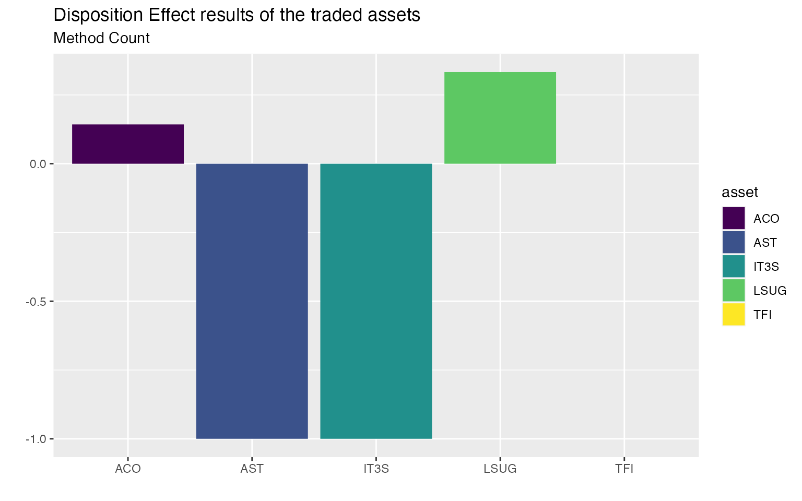

In recent years, an irrational phenomenon in financial markets is grabbing the attention of behavioral economists: the disposition effect. Firstly discovered by H. Shefrin and M. Statman (1985), the disposition effect consists in the realization that investors are more likely to sell an asset when it is gaining value compared to when it is losing value. A phenomenon which is closely related to sunk costs’ bias, diminishing sensitivity, and loss aversion.
From 1985 until now, the disposition effect has been documented in US retail stock investors as well as in foreign retail investors and even among professionals and institutions. By the time, it is a well-established fact that the disposition effect is a real behavioral anomaly that strongly influences the final profits (or losses) of investors. Furthermore, being able to correctly capture these irrational behaviors timely is even more important in periods of high financial volatility as nowadays.
The dispositionEffect package allows to quickly evaluate the presence of disposition effect’s behaviors of an investor based solely on his transactions and the market prices of the traded assets.
By the moment, you can only install the development version from GitHub with:
install.packages("devtools")
devtools::install_github("marcozanotti/dispositionEffect")You will be able to install the released version of dispositionEffect from CRAN with:
install.packages("dispositionEffect")To load the package simply use the usual library function.
The disposition effect analysis is performed on two fundamental types of data frames:
head(investor)
#> investor type asset quantity price datetime
#> 1 4273N B ACO 45 3.9400 2018-04-09 11:17:00
#> 2 4273N B LSUG 450 2.0515 2018-05-17 15:06:00
#> 3 4273N S ACO 45 4.1800 2018-05-22 17:11:00
#> 4 4273N B IT3S 230 1.0980 2018-05-28 14:30:00
#> 5 4273N S IT3S 230 1.0300 2018-06-01 15:27:00
#> 6 4273N B LSUG 90 2.5300 2018-06-01 15:43:00
head(marketprices)
#> asset datetime price
#> 1 ACO 2018-04-09 11:17:00 3.94000
#> 2 AST 2018-04-09 11:17:00 2.19600
#> 3 IT3S 2018-04-09 11:17:00 1.01840
#> 4 LSUG 2018-04-09 11:17:00 2.24950
#> 5 TFI 2018-04-09 11:17:00 0.40575
#> 6 ACO 2018-05-17 15:06:00 4.56000
Based solely on this two data frames it is possible to compute the so-called realized gains (RG), realized losses (RL), paper gains (PG), and paper losses (PL), as defined by L. Mazzucchelli et al. (2021).
To sum up the main concepts are the followings:
Realized Gain / Loss => whenever an investor closes a position in its portfolio in gain / loss
Paper Gain / Loss => all the open positions at the moment of the transaction, and all the partially closed positions.
The portfolio_compute is the core interface of the package and it is used to perform all the gains and losses computations.
portfolio_results <- portfolio_compute(
portfolio_transactions = investor,
market_prices = marketprices,
method = "count"
)
dplyr::select(portfolio_results, -datetime)
#> investor asset quantity price RG_count RL_count PG_count PL_count
#> 1 4273N ACO 222 2.840 1 0 6 0
#> 2 4273N AST 0 0.000 0 1 0 0
#> 3 4273N IT3S 0 0.000 0 1 0 0
#> 4 4273N LSUG 0 0.000 2 0 4 0
#> 5 4273N TFI 1400 0.284 0 0 0 0The result is a new data frame containing RG, PG, RL, and PL for each traded asset and the updated investor’s portfolio.
Once that gains and losses have been computed, it is finally possible to evaluate both the disposition effect of the investor and of each traded assets, where the disposition effect is defined as:
\[DE = \bigg(\frac{RG}{RG + PG}\bigg) - \bigg(\frac{RL}{RL + PL}\bigg)\]
The DE varies between -1 and 1. Positive DE values show the presence of disposition effect irrational behaviours, while negative values show the presence of opposite disposition effect behaviours. A value of zero show that no disposition effect exists.
The function disposition_effect allow us to compute it.
# assets' disposition effects
disposition_effect(
realized_gains = portfolio_results$RG_count,
paper_gains = portfolio_results$PG_count,
realized_losses = portfolio_results$RL_count,
paper_losses = portfolio_results$PL_count
)
#> [1] 0.1428571 -1.0000000 -1.0000000 0.3333333 0.0000000
# investor's disposition effect
disposition_effect(
realized_gains = portfolio_results$RG_count,
paper_gains = portfolio_results$PG_count,
realized_losses = portfolio_results$RL_count,
paper_losses = portfolio_results$PL_count
) %>%
mean(na.rm = TRUE)
#> [1] -0.3047619However, one may prefer to use the disposition_compute function directly on the results obtained from portfolio_compute for quick and clean computations.
# assets' disposition effects
asset_de <- disposition_compute(gainslosses = portfolio_results)
asset_de
#> investor asset DE_count
#> 1 4273N ACO 0.1428571
#> 2 4273N AST -1.0000000
#> 3 4273N IT3S -1.0000000
#> 4 4273N LSUG 0.3333333
#> 5 4273N TFI 0.0000000
# investor's disposition effect
investor_de <- disposition_compute(gainslosses = portfolio_results, aggregate_fun = mean, na.rm = TRUE)
investor_de
#> investor DE_count
#> 1 4273N -0.3047619Moreover, by means of the disposition_summary function it is also easy to summarise the disposition effect behaviour of the investor.
# investor's disposition effect summary statistics
disposition_summary(gainslosses = portfolio_results)
#> investor stat DE_count
#> 1 4273N Min -1.0000000
#> 2 4273N Q1 -1.0000000
#> 3 4273N Median 0.0000000
#> 4 4273N Q3 0.1428571
#> 5 4273N Mean -0.3047619
#> 6 4273N Max 0.3333333
#> 7 4273N StDev 0.6455850
Finally, by means of ggplot2, stunning charts can be produced to easily spot the presence of the disposition effect.
library(ggplot2)
asset_de %>%
ggplot2::ggplot(ggplot2::aes(x = asset, y = DE_count, fill = asset)) +
ggplot2::geom_col() +
ggplot2::scale_fill_viridis_d() +
ggplot2::labs(
title = "Disposition Effect results of the traded assets",
subtitle = "Method Count",
x = "", y = ""
)
For more detailed tutorials on disposition effect visit dispositionEffect.